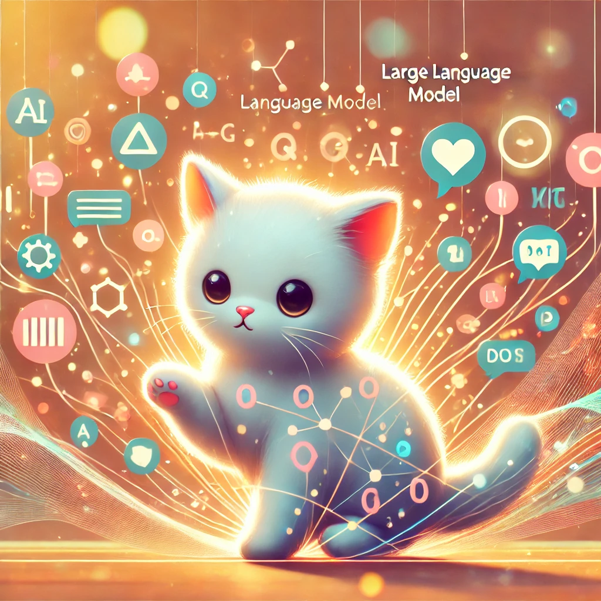
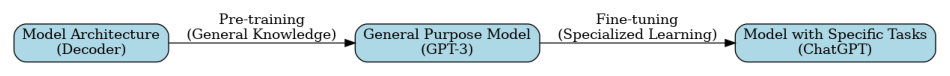

I am reading “Build a Large Language Model from scratch” by Sebastian Raschka in a cluster of stars study group. In this blog, I am writing about the first chapter, which introduces large language models.
 Image generated from Dall-E
Introduction
I like to use LLMs for doing homework and coding. When chatGPT first came out, I was amazed at how I could ask homework questions and code. However, it could not solve all problems and code however I wanted. However, as time progressed, models improved so much. When working on homework together, it barely hallucinated. When coding, LLMs can code so much better with right context and tools now. Even without context, I can easily create web applications using Claude with a simple prompt like, “create a simple videogame” and I have it. I got curious about how LLMs came so far, and I wanted to learn about them more. So, I decided to read “Build a Large Language Model from scratch by Sebastian Raschka. What is a large language model? It is a deep learning model that can understand and generate words. And it is large because there are many layers and parameters in the model trained with a lot of data.
Brief history of LLMs.
Traditional natural language processing relied heavily on rule-based systems and statistical methods. Scientists had to manually create rules for grammar and vocabulary, making it difficult for computers to understand context and meaning. These systems could perform basic tasks like identifying parts of speech or finding specific words, but they struggled with understanding human language’s complexity and nuance.
The introduction of transformers in 2017 revolutionized natural language processing. Unlike previous models that processed words one at a time, transformers could analyze entire sentences simultaneously through a mechanism called “attention.” This breakthrough allowed models to better understand context and relationships between words, leading to more accurate and natural language processing. The real game-changer came with models like BERT and GPT. These models, trained on massive amounts of text data, could understand and generate language in ways that seemed almost human-like.
While these advances have transformed the field, LLMs still face important challenges. They require extensive computational resources and energy for training, raising concerns about environmental impact and accessibility. Technical hurdles include handling multiple languages equally well and adapting to new information without retraining. The field also grapples with broader issues like copyright concerns, as these models are trained on vast amounts of existing content, and the critical need for responsible AI development to prevent potential misuse.
Why are LLMs a big deal now?
I remember when I first learned about machine learning - it was all about classifying images or predicting numbers. But LLMs are different. They can write essays, debug code, and even create art descriptions. What amazes me most is how they understand context. When I ask about a coding error, they don’t just fix it - they explain why the error happened and how to prevent it.
LLMs are transforming many fields. In education, they help students understand complex topics by breaking them down and providing examples. Scientists use them to summarize research papers and generate hypotheses. Developers use them as coding assistants - I’ve seen friends use cursor to write code faster than ever before. Even artists and writers use them for brainstorming ideas or editing their work.
What excites me most about LLMs is their potential future impact. Imagine having a personal tutor that adapts perfectly to your learning style, or a research assistant that can help analyze complex scientific data. We’re already seeing LLMs being integrated into search engines and everyday applications. But there’s still so much more to explore - like using LLMs to help discover new medicines or solve complex engineering problems. Instead of working on small details, people will be able to plan further and effectively turn their ideas into reality with immense productivity.
How to build an LLM?
When I first heard about building LLMs, I thought it would be incredibly complex - and it is! But breaking it down into steps makes it easier to understand. It’s like building with LEGO blocks: you start with basic pieces (pre-training), then customize them for specific tasks (fine-tuning). What fascinated me most was learning that these models aren’t just trained once and done - they go through multiple stages of learning, just like how we humans learn general knowledge first, then specialize in specific areas.
The transformer architecture is at the heart of modern LLMs, and there are two main approaches: BERT and GPT. When I first learned about them, I thought of BERT as a fill-in-the-blanks expert (like my English homework) and GPT as a story writer who keeps adding one word at a time. Let me explain why this matters.
BERT vs GPT
BERT (Bidirectional Encoder Representations from Transformers) looks at text from both directions - like how we humans can understand a sentence even if we start reading from the middle. For example, in the sentence “The cat ___ on the mat,” BERT can look at words before and after the blank to figure out the missing word is probably “sat.” This bidirectional understanding makes BERT really good at tasks like understanding the meaning of sentences or answering questions.
GPT (Generative Pre-trained Transformer) works differently - it’s what we call an autoregressive model. Imagine you’re telling a story, and each word you say influences what word comes next. That’s how GPT works - it predicts the next word based on all the previous words. What amazes me is how this simple approach leads to what scientists call “emergent behavior” - the model suddenly showing abilities nobody explicitly programmed, like solving math problems or writing code.
The Power of Encoder Models
We are all familiar with decoder models, such as ChatGPT and deepseek, and what they are capable of. So, what are encoder models? Are they obsolete now? Think of encoder models as expert readers rather than writers - they’re really good at understanding text, even if they don’t generate long responses like their decoder cousins. Therefore, they were used for search engines and anomaly detection, such as spam filter.
ModernBERT takes this idea even further. What amazes me is how it can do multiple tasks with just its MLM (Masked Language Model) head - the same part it uses during pre-training. Instead of needing special heads for different tasks, it can handle things like classification and multiple-choice questions using the same mechanism. It’s like having a Swiss Army knife that gets better at everything it does!
For example, on knowledge-based questions (like MMLU tests), ModernBERT-Large-Instruct performs surprisingly well - even competing with larger decoder models while using fewer resources. What’s really cool is how it does this with a single forward pass, making it much faster than decoder models that generate tokens one by one.
The best part? Encoder models are usually more efficient than their decoder counterparts. While ChatGPT might take its time generating a response word by word, encoder models can process entire sentences at once. It’s like the difference between someone reading a whole page at a glance versus reading it word by word.
Training stages
The real magic happens in two stages:
Pre-training: This is like giving the model a massive library to read. During this stage, the model learns general patterns in language - grammar, facts, and even some basic reasoning. It’s similar to how we learn language by being exposed to lots of books and conversations.
Fine-tuning: This is where it gets interesting. After pre-training, we can teach the model specific skills. It’s like taking a generally educated person and training them for a specific job. For ChatGPT, this meant instruction fine-tuning - teaching it to be helpful and follow human instructions. For other models, we might fine-tune them to be better at coding or medical diagnosis.
from graphviz import Digraphimport matplotlib.pyplot as pltimport matplotlib.image as mpimgdot = Digraph(comment='LLM Building Process')dot.attr(rankdir='LR')dot.attr('node', shape='box', style='rounded,filled', fillcolor='lightblue')dot.node('A', 'Model Architecture\n(Decoder)')dot.node('B', 'General Purpose Model\n(GPT-3)')dot.node('C', 'Model with Specific Tasks\n(ChatGPT)')dot.edge('A', 'B', 'Pre-training\n(General Knowledge)\n')dot.edge('B', 'C', 'Fine-tuning\n(Specialized Learning)\n')dot.render('llm_building_process', format='png', cleanup=True)img = mpimg.imread('llm_building_process.png')plt.figure(figsize=(12, 6))plt.imshow(img)plt.axis('off') plt.show()

Zero-shot Learning and Emergent Behaviors
One of the most fascinating things I learned about LLMs is their ability to perform zero-shot and few-shot learning. When I first heard these terms, they sounded like magic tricks, but they’re actually quite intuitive. Zero-shot learning is when a model can do something it was never explicitly trained to do. It’s like how we humans can guess what a “flying submarine” might look like even though we’ve never seen one - we combine our knowledge of flying and submarines to imagine it. Few-shot learning is similar, but with a few examples to guide the model - like showing someone a couple of examples of how to solve a math problem before asking them to solve a new one.
Another amazing property was learning about emergent behaviors in GPT models. As these models get larger and are trained on more data, they suddenly develop abilities that nobody programmed them to have. It’s like watching a child grow up - you teach them basic things like reading and writing, but suddenly they’re creating poetry or solving complex problems in ways you never taught them. For example, GPT-4 can solve complex math problems step by step, even though it was only trained to predict the next word in a sequence. How does this happen? Scientists are still trying to figure it out!
ChatGPT took this even further with instruction fine-tuning. Instead of just generating text, it learned to be helpful and follow instructions through a process called RLHF (Reinforcement Learning from Human Feedback). It’s like teaching a student not just knowledge, but also how to be a good teaching assistant - being helpful, admitting when they don’t know something, and explaining things clearly.
Conclusion
We covered basics of LLMs. I hope you learned about what LLMs are. In the future blogs, we will be coding large language models from scratch as the book says, and it will be so much fun!